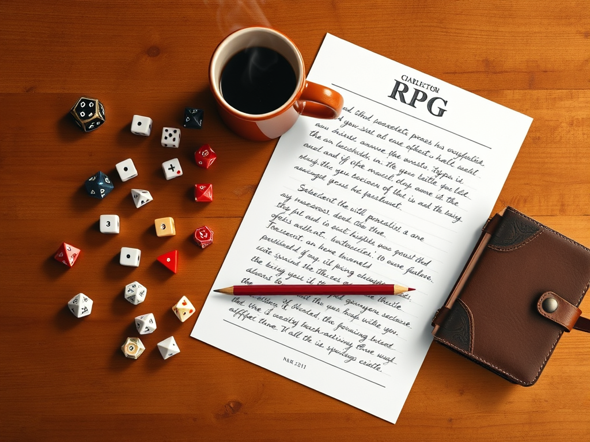
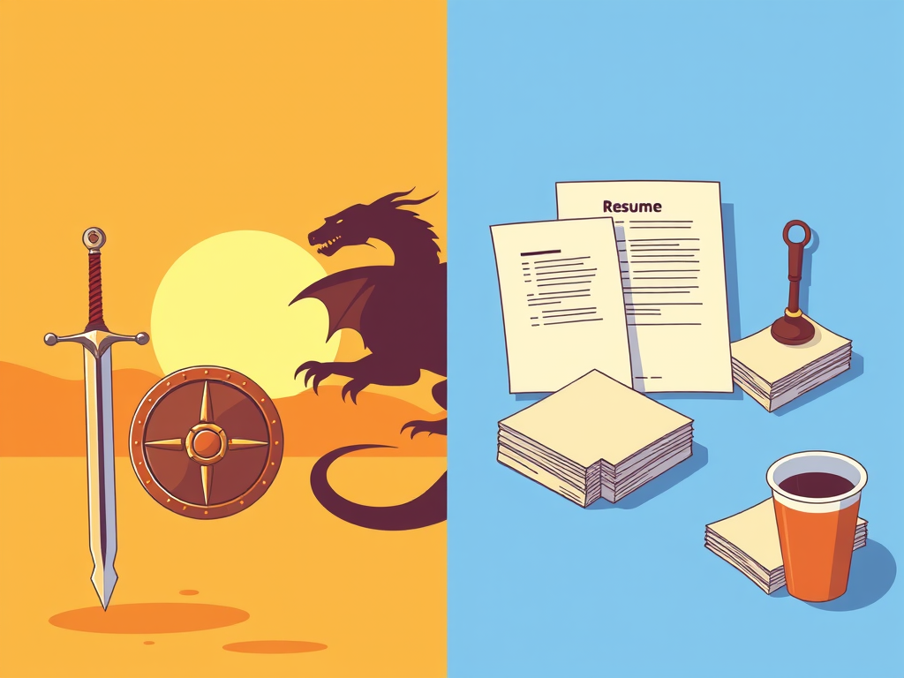
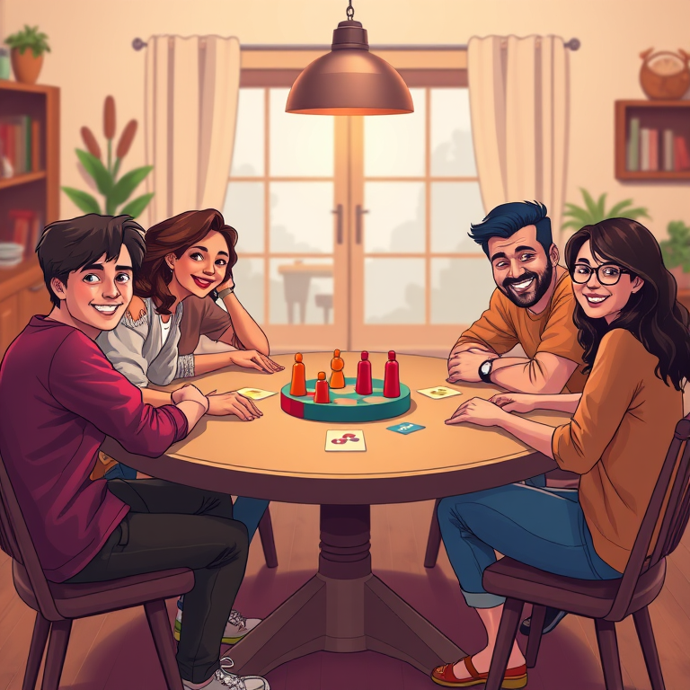
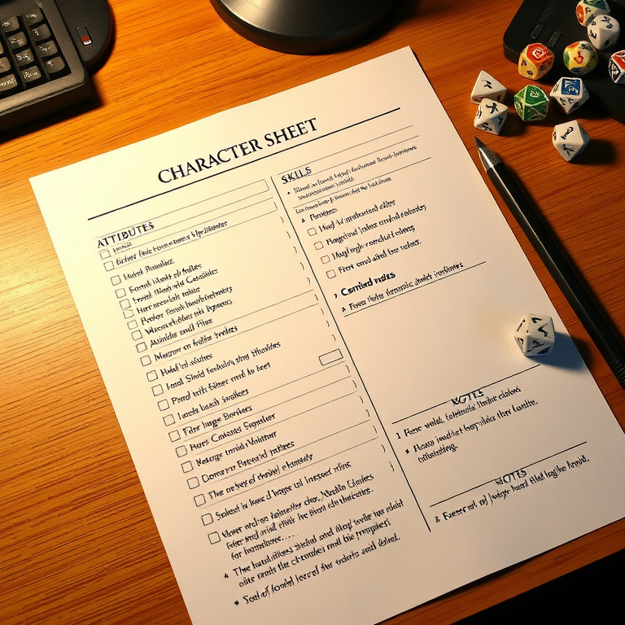
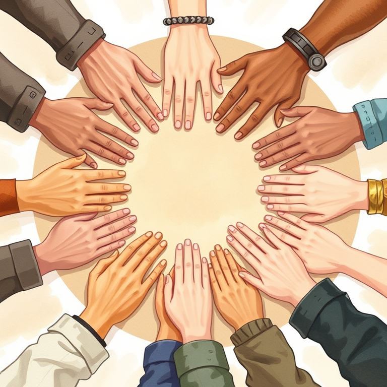

A hyper-realistic pen-and-paper life simulation ruleset. No magic. No monsters. Just the beautiful, brutal complexity of being human.
Reality RPG is a tabletop role-playing game that simulates the full scope of human existence — from waking up and brushing your teeth to navigating career advancement, building relationships, managing mental health, and everything in between. It uses standard pen-and-paper RPG mechanics (dice, attributes, skills, character sheets) applied to the most realistic setting possible: real life.

This game is not a game about escaping reality. It is a game about reality. Every mechanic is designed to reflect how actual human life works — with all its beauty, pain, bureaucracy, and randomness.

One player acts as the Game Master (GM) — controlling the world, non-player characters, and resolving consequences. The other players each create a Player Character (PC) representing a person navigating modern life.
Play proceeds in time increments chosen by the GM: minutes during tense scenes, hours during daily routines, days during travel or mundane stretches, and weeks/months during periods of stability. Time is a resource as precious as gold in fantasy RPGs.
Dice resolution, the six core attributes, skills, stress, health, and the fundamental systems that power every action in the game.
Building a person: ethnicity, culture, socioeconomic background, education, personality traits, and starting conditions.
Mental health conditions as mechanical systems — from depression and anxiety to psychopathy. Treatments, coping mechanisms, and impacts on all aspects of life.
Sleep, hygiene, nutrition, commuting, working, chores — the routines that sustain a human being and what happens when they break down.
Relationships, communication, conflict resolution, social status, networking, romance, family obligations, community, and discrimination — the invisible architecture of human life.
Mundane items (keys, wallets, phones), money management, rent, bills, grocery shopping, and the economics of survival.
Side-by-side comparisons showing how traditional RPG concepts map to their real-world equivalents. Your "sword" is a resume. Your "potion" is coffee.
Fully built diverse characters demonstrating every mechanic: ethnicity, culture, mental health, socioeconomic status, and daily routines.
ADHD, Autism, eating disorders, BPD, schizophrenia, learning disabilities — full mechanical treatment of neurodivergent experiences.
Mobility, sensory, and chronic physical conditions. Accessibility, chronic illness management, disability benefits, and social dynamics.
Intimacy, consent, STIs, contraception, pregnancy, menstruation, gender identity, and sexual trauma — with comprehensive safety tools.
Pregnancy, childbirth, parenting through all stages, adoption, co-parenting, and the financial/emotional impact of children.
Grief processing, end-of-life care, funerals, estate planning, dementia, existential crisis, and character legacy.
Voting, jury duty, taxes, immigration, legal encounters, government services, military service, and emergency situations.
Weather, seasons, natural disasters, pet ownership, digital life, social media, remote work, wellness, and environmental quality.
Inflation, recessions, credit scores, housing markets, investing, wealth inequality, entrepreneurship, career ladders, unions, AI disruption, and the gig economy.
Moving cities and countries, visa systems, expat life, diaspora communities, international dating, travel, climate migration, and digital nomadism.
Telecommuting, gig economy, multiple jobs, freelancing, job hunting, career changes, workplace politics, and burnout recovery.
Polyamory, open relationships, situationships, long-distance, friend groups, roommates, elder care, childfree life, and marriage economics.
Deep worship practice, deconversion, religious trauma, interfaith relationships, extremism, SBNR, and existential crisis.
Polarization, protesting, community organizing, running for office, lobbying, misinformation, and systemic change arcs.
Four complete campaign arcs: The First Year, Midlife Reset, The Immigrant Dream, and The Activist — with NPCs, timelines, and session outlines.
Random event tables, NPC generator, crisis generator, economic tracker, seasonal calendar, quick reference cards, and GM ethics guide.
Gym equipment, outdoor activities, bodyweight training, sports, martial arts — with fitness levels, progression, overtraining, and injury mechanics.
Firearms, blades, impact weapons, defensive tools — with proficiency, self-defense encounters, legal consequences, and criminal use mechanics.
Cars, motorcycles, bicycles, air travel, insurance, DIY repair, car culture, global perspectives — with driving mechanics, accidents, and total cost of ownership.
Print-ready 4-page character sheet with identity, attributes, skills, mental health, disability, resources, relationships, daily routine, and extended tracking fields.

3–7 People
One GM + 2–6 players
Polyhedral Dice
Especially d6s and d10s

Character Sheets
Printable here
Pencils & Notepads
The mundane inventory starts here
Coffee
The real-world "potion"

Empathy & Maturity
This game deals with real struggles
This game can explore heavy topics: poverty, mental illness, discrimination, addiction, grief. Establish safety tools before play begins. Every table should agree on a lines and veils list — topics that are strictly off-limits (lines) and topics that can happen but should be fade-to-black (veils).